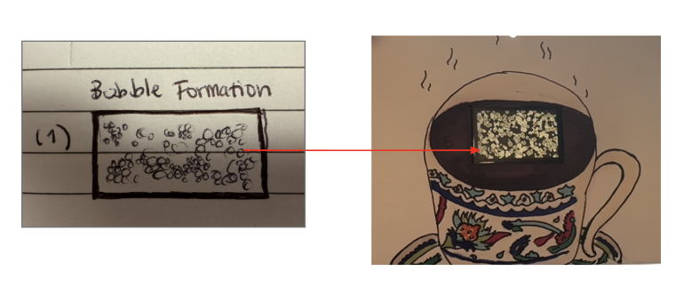
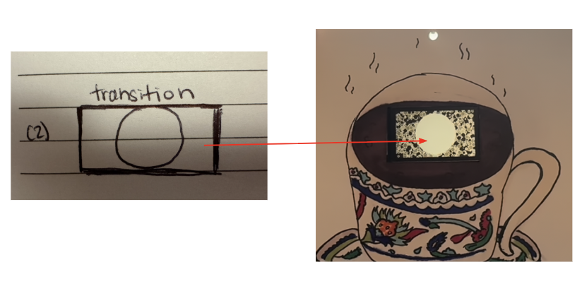
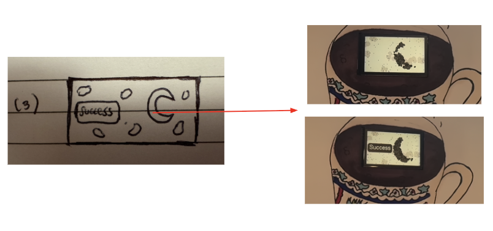

Generative Turkish Coffee Fortune
The generative Turkish Coffee Fortune slices a section of a coffee cup and displays the cultural fortune reading of Turkish coffee. The design is broken into three main parts to mimic the different phases of drinking Turkish coffee. The visuals follow a brown, coffee-ground color palette with different shapes and movements to make the audience feel as though they are drinking the coffee themselves. I specifically used an ESP32 display, a USB-C cable, a LiPo battery to power the display, a paper envelope, tape, and the Arduino IDE to code the design of the display. The piece runs on a loop, so once one cup finishes, a new one is poured and the whole process starts over again. Since almost of it is driven by randomness, no two cups ever look exactly the same.


To give more background on the practice itself, Turkish fortune reading, also known as fal in Turkish, is a social act of reading the patterns left by thick coffee grounds. The shapes and patterns left behind help you interpret specific symbols. The art of reading it requires some intuition and sometimes charismatic storytelling. The ritual itself originated in the Ottoman Empire and is a form of tasseography, reading the patterns that are left by sediments. Traditionally, once someone finishes their coffee, they make a wish, flip the cup upside down onto the saucer, and wait for it to cool before someone else reads it. Different shapes carry different meanings, so a bird can mean good news is on the way and a heart can mean love, but the reader always puts their own spin on it.
Design Decisions
While creating the generative Turkish Coffee Fortune, my decisions can be broken into multiple stages of the project.
1. The Theme of Transition
When I first heard the theme, figuring out how I would bring this abstract word to a visual level was a bit hard. When I think of transitions, I first tend to think of seasons, but I tried to think of something a bit more personal to me, which had been the transition from childhood to adulthood. This theme often comes to me, especially as a senior in college, constantly surrounded by nostalgia. I remember growing up, my older sister and cousins would be doing this Turkish fortune reading, and I could never understand how they were reading the grounds' buildup, but I was always interested. Now that I am the age they were when doing these readings, I do them with my friends and cousins. It signified this transition to adulthood.
2. How would I make the coffee apparent?
Drinking the coffee can be broken into three main processes. First, I decided that the entire display would show what it's like inside the cup rather than putting the cup in the display as well. Since this display was going in the middle of an envelope, I felt that decorating the envelope as the coffee cup would be more interactive. The screen on the T-Display is also pretty small, so drawing a whole cup on it would have made everything inside the cup tiny and hard to see.
Foam
First, after the coffee is served, it has foam or is still foaming. So I decided to create a bunch of bubbles using randomness. The display starts as a dark coffee color, and then 1,200 small bubbles appear one after another, each at a random spot on the screen with a random size. Each bubble gets a thin cream outline so it stands out from the ones around it.
About 25% of the time, instead of adding a bubble, the code draws a circle in the coffee color, which looks like a bubble popping and showing the coffee underneath. The rest of the bubbles are split between two foam colors so the foam isn't one flat shade. Because everything is random, the foam never looks the same twice. I also kept the bubbles fairly small, since real Turkish coffee foam is made of lots of tiny bubbles rather than a few big ones, and the smaller sizes made the foam look much more believable. This part lasts about ten seconds, which felt long enough to watch the foam build up without making people wait too long for the actual fortune.

Flip cup
I was thinking about how I would display the cup being turned over. Once the cup is turned over, most of the cup is exposed, so I thought of transitioning the bubbles into a white background and slowly displaying the buildup. I did so by drawing a cream circle in the center of the screen that grows a few pixels at a time until it covers the whole display.
After that, light coffee stains appear one by one. Each stain is made of a few overlapping circles with small grains in it, so it looks like a smudge instead of a perfect circle. In a real cup, the coffee leaves faint marks all over the inside, not just where the thick grounds settle, so adding these stains made the background feel less empty and more like an actual cup that someone just finished drinking from.

The fortune
To keep things in scope for the timing of the project, I decided to use two patterns, a four-point star and a moon. For each cycle, the code randomly picks which one shows up, and the fortune word ("Success" for the moon, "Luck" for the star) appears next to it at the end. I chose these two because they are both common symbols in coffee readings and both leave positive meanings for the audience approaching the piece.
I used math to check whether a point on the screen is inside the shape. The moon is a big circle with a second, shifted circle taking a "bite" out of it, which leaves a crescent. The star is a tall diamond and a wide diamond crossed, with a small circle in the middle. These act like an "invisible" outline, so the grounds know where they are allowed to land.
To create the blotches, I used a random walker, which is a point that moves a few pixels in a random direction each step and leaves a grain behind. If it wanders outside the shape, it jumps to a new random spot inside the shape and starts a new blotch. Over 1,500 steps, these blotches build up into the moon or the star. Since the walker never takes the same path twice, the shape comes out a little different every single time, the same way no two real cups ever leave the same pattern.
I made sure to play around with the numbers, like how often a new blotch starts and how many steps it takes, until the shape was visible but still looked like real grounds. If there were too few steps, the shape was hard to make out. If there were too many, it filled in completely and lost the grainy look, so finding that balance took a lot of testing on the actual display.

Technical Challenges
The first challenge came from the four-point star. The math was hard because unlike a circle, a star has sharp points, so there isn't one simple formula to check whether a point is inside it. I solved this by building the star out of simpler shapes, two diamonds crossed like a plus sign with a circle in the middle to fill it in. Since these shapes are random and sometimes hard to read in a real cup, I decided to draw a four-point star instead of five-point to mimic the realistic patterns that would show up. Breaking a complicated shape down into smaller pieces ended up being a really useful way to think about the problem, and it is something I would use again for other shapes.
Then, how I would make the blotches look realistic was another challenge. When the shape was drawn as one solid dark shape, it looked like a stamp instead of coffee grounds. Real grounds clump unevenly and leave gaps, so I switched to the random walker, which builds the shape out of many small blotches. To make them look natural, I randomly drew each grain in either dark or medium brown and added stray specks across the whole cup. It was interesting to see how much more natural something could look just by adding more randomness and letting go of some control over exactly where everything ends up.
Another issue was the bubbles. I added an edge around them to help differentiate them and make them look a bit more 3D. Without the edge, the bubbles blended together into one flat patch of color, and it was hard to tell where one bubble ended and the next one started. The thin light outline acts almost like a highlight, which gave the foam more depth with only one extra line of drawing.
Design Recommendations
My first design recommendation is to sketch out even a simple prototype of what you want your outcome to look like because having those rough drawings made it much easier to decide what to code next. Also, don't be afraid of randomness and be ready to go through a lot of trial and error, since most of the details that made this piece feel alive came from testing different numbers until something clicked. Lastly, making things look natural on a small display requires using different shades of the same color because a single color quickly makes everything look quite flat unless that's the intended design.
Link to github repository can be found at the top of the page